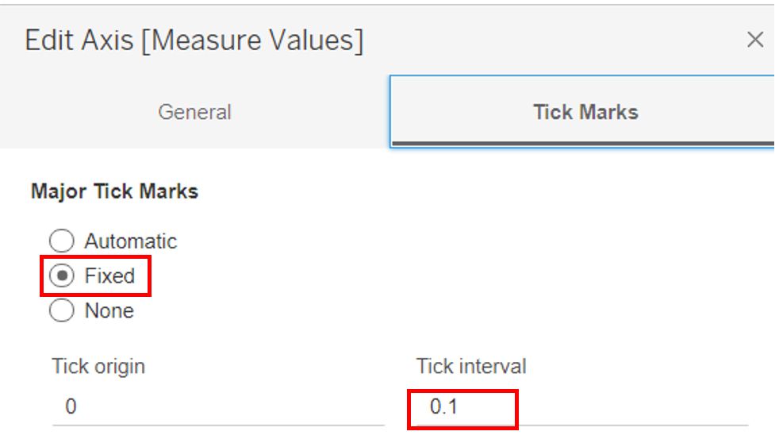
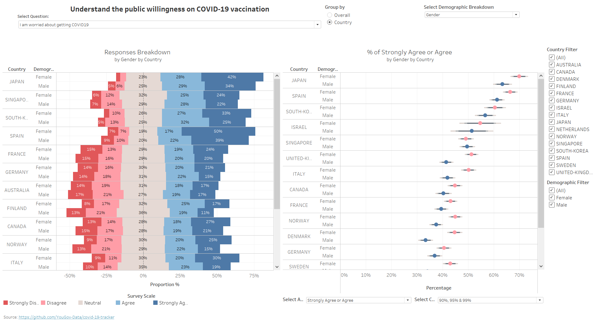

Original Data Visualisation
1.0 Critiques and Suggestions
1.1 Clarity
| S/N | Critiques | Suggestion |
|---|---|---|
| C1 | We can only tell the proportion for the individual country in a stacked bar chart but hard to do a comparison with other countries as there are 5 types of responses. This is especially so when the stacked bar chart is sorted alphabetically and the colours are not aligned. Used of random colours make it harder to see the positive and negative responses | To use Diverging Stacked Bar Chart with Neutral in middle, displaying half negative and half positive to better compare the negatives and positives percentages. By adding a reference line in the middle can further enhance the comparision. The Red and Blue hue colours to be used appropriately to better represent the negative, positive, and grey for neutral responses. Ensure sortings are allowed by both X & Y Axis for better comparisons in different perspective. |
| C2 | The title “Which country is more pro-vaccine?” can be confusing as it is not the actual survey question used which can be misinterpreted as the responses to “if they think that country citizens are more pro-vaccine?” Besides, having to know the actual list of questions from the data dictionary, we do not know if the chart is based on just 1 question or a series of questions. |
To allow selection and display of the actual questions to be more explicit |
| C3 | The visualization is based on survey questions, we cannot visualize the uncertainty as we do not know if the sample size is large enough to represent the population. |
To use Error bar on dot plot and statistical values to depict the survey results. Different confidence interval levels can be selected to help better visualize the uncertainty. Tooltip can help to indicate the actual percentage and sample size. |
| C4 | Legend title as Vac1, we do not know what it actually means. Besides, the categories are not fully labeled, we only know 1 for Strongly agree and 5 for Strongly Disagree but not for 2,3, and 4. Its placement is nearer to Bar chart which can be confusing if it applies to which chart or both. |
To have a meaningful legend title and better labeling of the categories to improve the clarity. Proper placement of legend. |
1.2 Aesthetic
| S/N | Critiques | Suggestion |
|---|---|---|
| A1 | Inconsistent decimal place for X-Axis % in the 2 charts. | Ensure consistent decimal place in the X-Axis |
| A2 | Wrong Spelling for Vaccine as vaccine | Ensure words are spelled correctly |
| A3 | Country Names start with lower case | Convert to Upper case for first letter or whole word |
| A4 | The use of random colour for the 5 responses can be less aesthetically pleasing and not colourblind friendly The use of Red colour to indicate neutral can cause an unnecessary distraction to neutral data. |
To use contrasting colour-blind friendly colours appropriately. Red and blue colours for negative and positive responses |
2.0 Sketch of Proposed Design
The title “Understand the public willingness on Covid-19 vaccination” states clearly the objective of the Data visualization. Ability to select the questions allows user to have see each questions and their responses. This is further value add by having the flexibility to select by overall or country, and breakdown by demographic with ad-hoc parameters.
For the Error bar Dot plot, we can select by the different response types and combination of Confidence intervals. The Chart title will be dynamically change to reflect the selections supplement with tooltip for details.
Both charts are interactive linked to enable cross highlight such as by country or demographic.
Filtering on the right panel allows narrowing down to country selections and the dynamic demographic categories.
3.0 Data Visualization Step-by-step guide
3.1 Data preparation
| S/N | Interface | Step | Action |
|---|---|---|---|
| 1 | File Explore | Unzip Data set | • Unzip source dataset covid-19-tracker-master.zip • Navigate to data folder • Unzip all data files • Create archive folder and move all the zipped files to the folder |
| 2 | Data Source | Load and union all csv | • Click New Union • Select all countries.csv and drag to the union pop up window |
| 3 | Data Source | Hide unnecessary columns | • Hide all columns except Vac_1,vac2_1, vac2_2, vac2_3, vac2_6, vac3, gender, age, household_size, household_children, employment_status and table name that are required for the makeover |
| 4 | New Sheet | Check for country with no responses | • Drag Vac_1,vac2_1, vac2_2, vac2_3, vac2_6, vac3 into Columns • Drag Table Name into rows • Sort according to count |
| 5 | Data Source | Remove csv with from union | • Edit union and remove countries’ csv that do not have any survey responses to reduce the dataset • You will be left with 16 Countries |
| 6 | Data Source | Pivot data to tall dataset | • Select Vac_1, vac2_1, vac2_2, vac2_3, vac2_6 and vac3 and right click Pivot • Right click rename Pivot Field Name as Question and Pivot Field Value as Answer |
| 7 | Data Source | Uppercase Country name | • Right click on Table Name and create a new calculated field Country_Name. Using below formula to remove the extension “.csv” and to change the country name to uppercase upper(REPLACE([Table Name],“.csv” , "")) |
| 8 | Data Source | Renumber score (Optional) | • Right click on Answer Column and create a new calculated field Score 6 - INT(left([Answer],1)) This is optional and can be done to by manual sort the display on the chart |
| 9 | Data Source | Set alias values | • Create new calculated field Score_N with [Score] • And right click and select Aliases.. and set to the following Alias values |
| 10 | Data Source | Create Group | • Right click on age column and Create Group by interval of tenth age • Check the distribution and notice that age 18 & 19 and above 70s have much lower counts • Right click on household_size column and Create Group for Group Null, “Don’t know” and “Prefer not to say” Group 8 and 8 or more • Repeat the step for household_children and group null and 0 as 0 |
3.2 Error bar on Dot plot
| S/N | Interface | Step | Action |
|---|---|---|---|
| 11 | Worksheet %CI | Create Parameter | • Right click on the left panel select Create Parameter.. and create the following parameters |
| 12 | Worksheet %CI | Create Calculated Fields | • Under Analysis -> Create calculate fields for the followings |
| Calculated Field | Value |
|---|---|
| N_Agree | IF[Score] =4 then 1 else 0 end |
| N_Disagree | IF[Score] =2 then 1 else 0 end |
| N_Neutral | IF[Score] =3 then 1 else 0 end |
| N_Strongly Agree | IF[Score] =5 then 1 else 0 end |
| N_Strongly Disagree | IF[Score] =1 then 1 else 0 end |
| Numerator | case[Select Answer] when 1 then [N_Strongly Disagree] when 2 then [N_Disagree] when 3 then [N_Neutral] when 4 then [N_Agree ] when 5 then [N_Strongly Agree] when 6 then [N_Strongly Disagree]+[N_Disagree] when 7 then [N_Strongly Agree]+[N_Agree ] end |
| Number of Records | 1 |
| Prop | sum([Numerator])/sum([Number of Records]) |
| [zvalue_90] | 1.645 |
| [zvalue_95] | 1.959964 |
| [zvalue_99] | 2.575829 |
| Prop_SE | SQRT(([Prop]*(1-[Prop]))/sum([Number of Records])) |
| Prop_Margin of Error 90% | [zvalue_90]*[Prop_SE] |
| Prop_Margin of Error 95% | [zvalue_95]*[Prop_SE] |
| Prop_Margin of Error 99% | [zvalue_99]*[Prop_SE] |
| lower_90 | if[Select CI] IN(1,4,6) THEN [Prop]-[Prop_Margin of Error 90%]END |
| lower_95 | if[Select CI] IN(2,4,5,6) THEN[Prop]-[Prop_Margin of Error 95%]END |
| lower_99 | if[Select CI] IN(3,5,6) THEN[Prop]-[Prop_Margin of Error 99% ]END |
| upper_90 | if[Select CI] IN(1,4,6) THEN [Prop]+[Prop_Margin of Error 90%]END |
| upper_95 | if[Select CI] IN(2,4,5,6) THEN[Prop]+[Prop_Margin of Error 95%]END |
| upper_99 | if[Select CI] IN(3,5,6) THEN[Prop]+[Prop_Margin of Error 99% ]END |
| Country | case[Group by] when “Country” then [Country_Name] else "" END |
| Demographic | case[Breakdown by] when “Nil” then "“ when”Gender" then [gender] when “Age” then [age (group)] when “Household_Size” then [household_size (group)] when “Household_Children” then [household_children (group)] when “Employment_Status” then [employment_status] END |
| S/N | Interface | Step | Action |
|---|---|---|---|
| 13 | Worksheet %CI | Create Chart | • Drag Measure Values to Columns,and Country & Demographic to Rows • Remove other Measure Values except the lower_90/95/99 and upper_90/95/99 Measure values in the below order • Change Mark to Line and drag [Measure Names] to both Path and Color • Click on Color and Edit colors.  • Drag Prop to Columns. • Change mark type to Circle. • Select Dual Axis and Synchronise Axis. • Change Title to Percentage • Under Tick Marks, Fixed Tick interval to 0.1  • Drag Score_N to Filter and uncheck NA to filter out invalid entry. • Edit chart Title to |
| 14 | Worksheet %CI | Create dynamic Tooltip | • Select All under Marks • Click Tooltip to edit tooltip format and adjust the text and format as shown |
Completed Error bar on Dotplot
3.3 Likert Scale
| S/N | Interface | Step | Action |
|---|---|---|---|
| 15 | Worksheet Proportion | Create new worksheet for Likert Scale | Create new worksheet name Proportion |
| 16 | Worksheet Proportion | Create calculate fields | Under Analysis -> Create calculate fields for the followings |
| Calculated Field | Value |
|---|---|
| Total Count | Total(sum([Number of Records])) |
| Count Negative | If [Score]<3 then 1 ELSEIF [Score]=3 then 0.5 else 0 end |
| Total Count Negative | Total(sum([Count Negative])) |
| Percentage | sum([Number of Records])/[Total Count] |
| Gantt Start | -[Total Count Negative]/[Total Count] |
| Gantt Percent | PREVIOUS_VALUE([Gantt Start])+zn(LOOKUP([Percentage],-1)) |
| colour Agree | IF [Score_N]=4 THEN “Agree” Else ""END |
| colour Disagree | IF [Score_N]=2 THEN “Disagree” Else "" END |
| colour Neutral | IF [Score_N]=3 THEN “are Neutral” Else "" END |
| colour Strongly Agree | IF [Score_N]=5 THEN “Strongly Agree” Else "" END |
| colour Strongly Disagree | IF [Score_N]=1 THEN “Strongly Disagree” Else "" END |
| S/N | Interface | Step | Action |
|---|---|---|---|
| 17 | Worksheet Proportion | Create Likert scale chart | • Drag Gantt Percent and Country to Columns and Rows respectively • Change mark to Gantt Bar • Drag Percentage to Size Mark • Repeat filter step done in earlier segment by dragging Score_N to Filter and uncheck NA to filter out invalid entry. • Drag Score_N to Color • Rename legend Title as Survey Scale • Change Score_N color as shown below. • Edit Gantt Percent Table calculation for both Gantt Percent and Percentage • Check only for Score_N in “compute using”. • Add reference line to X-Axis • Format x axis to percentage with 0 decimal place and change Axis Title to “Proportion %” • Drag Percentage to Label and format to percentage with 0 Decimal place as well. • Change tick interval to 0.25 |
Completed Likert Scale Chart
| S/N | Interface | Step | Action |
|---|---|---|---|
| 18 | Worksheet Proportion | Create Dynamic Tooltip | • Drag the colour fields to Tooltip • Edit Tooltip and change colour according to Score_N. • Bold and increase font size accordingly • Drag Demographic into Rows for dynamic parameter switch • Edit Title as |
3.4 Dashboard
| S/N | Interface | Step | Action |
|---|---|---|---|
| 19 | Dashboard | Create dashboard | •Create new dashboard •Drag Sheet Proportion and Sheet CI % to the canvas •Arrange and align the parameters, filters and legend •Rename the Title of the parameters •Create text as source link •Ensure alignment and readability |
| 20 | Dashboard | Link filters both charts | •For all filters, apply linkages by select All using Related Data Sources so it can be applied to both charts |
| 21 | Dashboard | Create action for highlight interaction | •Select Dashboard -> Action -> add Action -> to create new highlight for highlight interaction between the two charts |
Final Dashboard 
4.0 Major observations